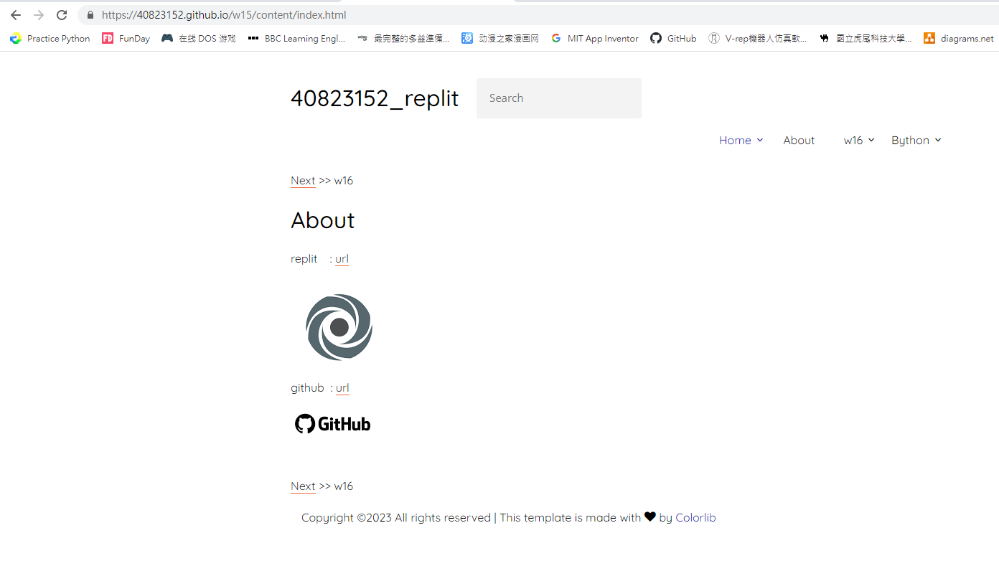

w15 <<
Previous Next >> replit_new_repository
Replit
Replit : url

github : url
Github_new_repository
Github -> New(Top Respositorie) -> Repository name -> create repository
github repository
git init
git add README.md
git commit -m "first commit"
git branch -M main
git remote add origin https://github.com/40823152/w15.git
git push -u origin main
To create a new repository on GitHub, follow these steps:
-
Sign in to your GitHub account. If you don't have an account, you can create one for free at https://github.com/join.
-
Once signed in, click on the "+" button in the top-right corner of the GitHub interface. A dropdown menu will appear.
-
From the dropdown menu, select "New repository." You will be taken to the "Create a new repository" page.
-
On the "Create a new repository" page, provide the following information:
- Repository name: Choose a unique and descriptive name for your repository.
- Description (optional): Add a brief description to help others understand the purpose of your repository.
- Visibility: Choose whether you want your repository to be public (visible to everyone), private (visible only to you and collaborators you specify), or internal (visible to members of your organization).
- Initialize this repository with a README: If you want to include a README file, which is helpful for providing project information, instructions, or documentation, check this option.
- Add .gitignore: If your project requires ignoring certain files or directories (e.g., logs, dependencies, or build artifacts), select the appropriate .gitignore template.
- Choose a license (optional): If you want to specify a license for your repository, choose one from the provided options.
-
Once you have filled in the necessary information, click on the "Create repository" button at the bottom of the page.
Congratulations! You have successfully created a new repository on GitHub. You can now start adding files, making commits, and collaborating with others on your project.
w15 <<
Previous Next >> replit_new_repository